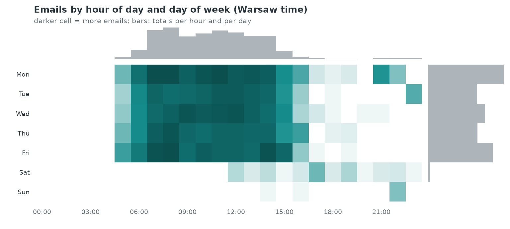
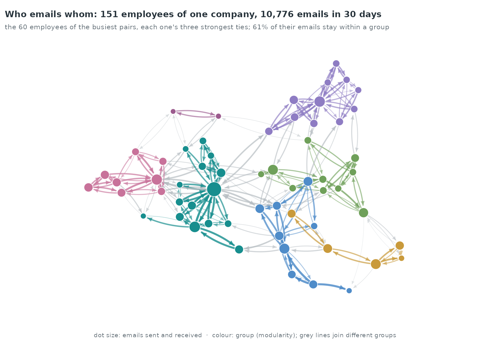
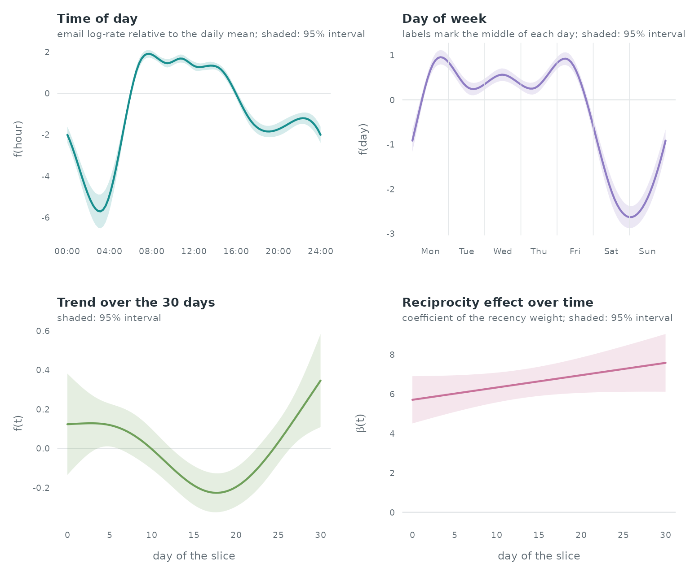
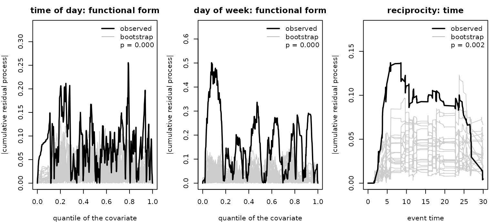

Case study: time of day and day of week in company email
Source:vignettes/articles/case-email-global.Rmd
case-email-global.RmdTime of day and day of week in company email
radoslaw_email records the internal email of a
manufacturing company (Michalski et al. 2011; Nurek & Michalski
2020, a company in Poland). Email is sent during working hours and on
working days, so the rate of every dyad depends on the clock. Time of
day and day of week are global covariates: at any
instant they take the same value for every sender–receiver pair. This
case study estimates their effect next to an endogenous reciprocity
effect, using time-shifted case-control sampling, and checks the fitted
model with gof_rem(), gof_multivariate() and
gof_auxiliary().
Data and clock time
time counts days since the first email;
attr(radoslaw_email, "unix_origin") holds that instant as a
Unix time. We use the first 30 days and convert each time to Central
European clock time.
data(radoslaw_email)
origin <- attr(radoslaw_email, "unix_origin")
ev <- radoslaw_email[radoslaw_email$time < 30 &
radoslaw_email$sender != radoslaw_email$receiver,
c("sender", "receiver", "time")]
clock <- function(t) as.POSIXlt(origin + t * 86400, origin = "1970-01-01",
tz = "Europe/Warsaw")
tod <- function(t) { p <- clock(t); p$hour + p$min / 60 + p$sec / 3600 } # hours
dow <- function(t) { p <- clock(t); (p$wday + 6) %% 7 + tod(t) / 24 } # 0 = Monday 00:00
c(events = nrow(ev), actors = length(unique(c(ev$sender, ev$receiver))),
first = format(clock(min(ev$time))), last = format(clock(max(ev$time))))
#> events actors first
#> "10776" "151" "2010-01-02 17:40:10"
#> last
#> "2010-02-01 17:35:37"

92.6% of the emails are sent between 07:00 and 16:00, and 0.8% on Saturday or Sunday.
Ordinary sampling cannot see a global covariate
With ordinary nested case-control sampling each control gets its event’s time, so a covariate that depends on time alone takes the same value for the event and its control:
cc0 <- sample_non_events(ev, seed = 1)
cc0$tod <- tod(cc0$time)
w0 <- widen_case_control(cc0, covariates = "tod")
summary(w0$d_tod)
#> Min. 1st Qu. Median Mean 3rd Qu. Max.
#> 0 0 0 0 0 0Every event-minus-control difference is zero, so the time-of-day effect drops out of the partial likelihood.
Time-shifted sampling
shift = "exponential" draws one exponential shift per
dyad and samples each control from the dyads whose back-shifted time
falls in the observation window (here the 30 days of the slice). Each
control is stored at its own time.
cc <- sample_non_events(ev, seed = 1, shift = "exponential", window = c(0, 30))
sh <- attr(cc, "shift")
c(mean_shift_days = sh$mean, uninformative_events = length(sh$uninformative))
#> mean_shift_days uninformative_events
#> 15.23542 0.00000The endogenous covariate is reciprocity timing: the time since the
receiver last emailed the sender, mapped to a recency weight with
transform_recency() (1 when the receiver emailed the sender
a moment ago, falling towards 0 as the gap grows, and 0 when the
receiver has not emailed the sender). On case-control data
endogenous_features() builds the history from the observed
emails only, and each control is scored at its own time. Time of day and
day of week are read from each row’s clock time.
cc <- endogenous_features(cc, stats = "reciprocity_time_recent")
cc$recip <- transform_recency(cc$reciprocity_time_recent)
cc$recip[is.na(cc$recip)] <- 0
cc$tod <- tod(cc$time)
cc$dow <- dow(cc$time)
w <- widen_case_control(cc, covariates = c("recip", "tod", "dow", "time"))
summary(w$d_tod)
#> Min. 1st Qu. Median Mean 3rd Qu. Max.
#> -18.314 -7.283 -1.169 -1.144 4.869 23.427Model
Time of day and day of week enter as cyclic smooths
(bs = "cc"), the residual trend over the 30 days as
nl(time), and reciprocity as a time-varying effect
tv(recip). Because the controls carry their own times,
tv(recip) contributes
,
with
the event time and
the control’s time.
fit <- rem(~ nl(tod, bs = "cc", k = 12) + nl(dow, bs = "cc", k = 8) +
nl(time, k = 5) + tv(recip, k = 5),
data = w, method = "gam", time = "time")
summary(fit)$s.table
#> edf Ref.df Chi.sq p-value
#> s(.X_tod):.I 9.820934 10.000000 938.51277 0.0000000000
#> s(.X_dow):.I 5.931675 6.000000 433.23812 0.0000000000
#> s(.X_time):.I 3.167483 3.640323 22.21318 0.0003238577
#> s(.TP):.XI_recip 2.000223 2.000444 301.06346 0.0000000000
In the mgcv summary the largest p-value of the four
smooth terms is 3.2e-04. The time-of-day curve is lowest at about 3.1 h
and ranges from -0.04 to 1.88 between 08:00 and 16:00. The day-of-week
curve averages 0.44 from Monday to Friday and -1.97 on Saturday and
Sunday (log-rate scale, each curve centred by mgcv). Over
the 30 days the reciprocity coefficient
ranges from 5.71 to 7.59. Shaded bands in the figure are 95%
intervals.
Goodness of fit of the fitted model
gof_rem() tests the fitted model directly. The
functional-form test orders the residuals by the covariate’s value, and
the time test cumulates the residuals of a term over event time; both
use a multiplier bootstrap that accounts for the estimated
coefficients.
g_tod <- gof_rem(fit, "tod", test = "functional_form", n_sim = 1000, seed = 1)
g_dow <- gof_rem(fit, "dow", test = "functional_form", n_sim = 1000, seed = 1)
g_time <- gof_rem(fit, "recip", test = "time", data = w, n_sim = 1000, seed = 1)
g_tod; g_dow; g_time
#> Martingale-residual GoF test of 'tod': functional form
#> sup statistic = 0.2554, p-value = 0.0000 (1000 bootstrap replicates, n = 10776)
#> Martingale-residual GoF test of 'dow': functional form
#> sup statistic = 0.5011, p-value = 0.0000 (1000 bootstrap replicates, n = 10776)
#> Martingale-residual GoF test of 'recip': time specification
#> sup statistic = 0.1370, p-value = 0.0020 (1000 bootstrap replicates, n = 10776)
op <- par(mfrow = c(1, 3), mar = c(4, 4, 2.5, 1))
plot(g_tod, main = "time of day: functional form")
plot(g_dow, main = "day of week: functional form")
plot(g_time, main = "reciprocity: time")
par(op)The functional-form test gives p < 0.001 for time of day and p < 0.001 for day of week; the time test for the reciprocity term gives p = 0.002.
Linear-model diagnostics on one week
gof_multivariate() and gof_auxiliary() take
an event log and a linear model, draw their own case-control sample and
refit. Here they run on the first week of the slice with count
statistics: gof_multivariate() tests whether
reciprocity_count needs a smooth instead of a linear
effect, and gof_auxiliary() tests whether an unmodelled
statistic carries signal the model misses.
ev7 <- ev[ev$time < 7, ]
m <- c(reciprocity_count = "linear", transitivity_count = "linear")
gm <- gof_multivariate(ev7, m, covariate = "reciprocity_count", k_basis = 5,
n_sim = 1000, seed = 1)
ga <- gof_auxiliary(ev7, m, auxiliary = "sender_outdegree", n_sim = 1000,
seed = 1)
rbind(multivariate_reciprocity = c(statistic = gm$statistic, p_value = gm$p_value),
auxiliary_sender_outdegree = c(statistic = ga$statistic, p_value = ga$p_value))
#> statistic p_value
#> multivariate_reciprocity 4.075663 0.029
#> auxiliary_sender_outdegree 10.159138 0.057On the 2794 emails of the first week, the multivariate test gives p = 0.029 for a non-linear reciprocity-count effect, and the auxiliary test gives p = 0.057 for the sender’s out-degree.
Reference
Michalski R, Palus S, Kazienko P (2011). Matching organizational structure and social network extracted from email communication. Lecture Notes in Business Information Processing 87, 197–206. doi:10.1007/978-3-642-21863-7_17.
Nurek M, Michalski R (2020). Combining machine learning and social network analysis to reveal the organizational structures. Applied Sciences 10(5), 1699. Data: Harvard Dataverse, doi:10.7910/DVN/6Z3CGX (CC0 1.0).